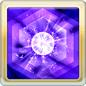

•防禦+100%
•DA+100%
•TA+30%
•奧義傷害+100%
•奧義上限+50%
フェディエル(リミテッド)
基本資訊
| 定位 | 特殊 |
| 得意武器 | 劍/格鬥 |
| 種族 | 牛角 |
| CV | 田野アサミ |
立繪
上限解放前||上限解放後奧義
| リヴァーサルフレイム | |
| 闇屬性4.5倍傷害 •場地效果為絕望的闇禍時，奧義發動2次 |
主動技能
|  CD:16 |
カースドヒューネラル |
| 我方闇屬性角色屏障效果(耐久10000) 我方闇屬性角色死之安寧效果(無法消除/受到2次傷害解除) 在死之安寧效果中的角色獲得以下效果 •弱體免疫 •驅散預防 •高昂效果(10%) |
|
CD:6 |
ミアズマハンズ |
| 對敵方單體造成6次闇屬性1.5倍傷害 敵方單體闇屬性防禦-10%(累積/最多40%)，持續180秒 DA/TA-10%(累積/最多40%)，持續180秒 •場地效果為絕望的闇禍時，通常攻擊後自動發動 |
|
| 『黒』の侵蝕 | |
| 賦予單人場地效果:絕望的闇禍(永久) └敵方/我方防禦-25% └回合結束時受到等同於HP10%的傷害(我方最多1000/敵方最多5萬) #無法再使用 |
被動技能
|
闇を統べる世界の楔 |
| 場地效果為絕望的闇禍時，闇屬性角色獲得以下效果 •防禦+100% •DA+100% •TA+30% •奧義傷害+100% •奧義上限+50% |
|
|
理外の『黒』 |
| 發動FC時，自己所有技能CD歸0 |